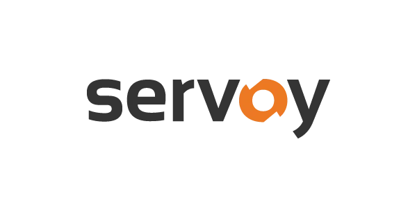

Qué es Servoy
Una plataforma para construir aplicaciones de negocio a medida — sistemas de gestión, control de producción, seguimiento de pedidos, cualquier necesidad específica de tu empresa que no existe "de catálogo". Pensada para desarrolladores profesionales: control total del código, con la velocidad de trabajar más rápido que programando desde cero. El resultado funciona igual en navegador, móvil o escritorio, sin construir cada versión por separado.
Tres formas de recibirla
Como aplicación de escritorio, directamente desde el navegador sin instalar nada, o desplegada y gestionada en la nube propia de Servoy, que se encarga de escalarla y mantenerla siempre disponible.
Un fabricante consolidado
Servoy BV, con sede en los Países Bajos, lleva más de dos décadas construyendo esta plataforma y hoy da servicio a cerca de mil clientes, entre ellos nombres como Sony, Motorola o UCLA.
Qué ofrece DKtec
DKtec es partner oficial de Servoy: puede revenderla y, además, ofrecerla como producto propio a empresas que ya construyen sobre esta tecnología.